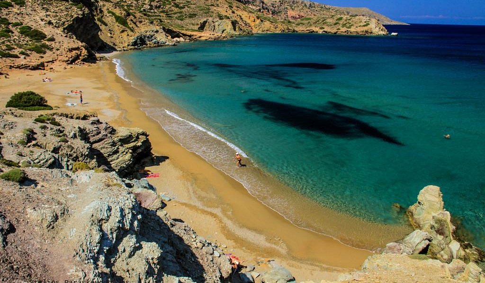
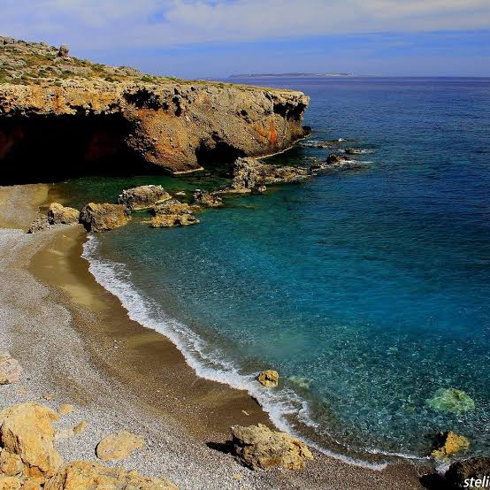
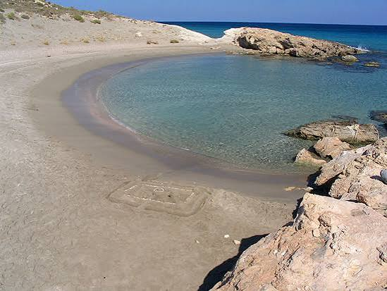
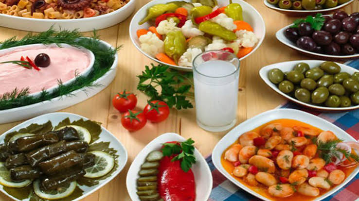
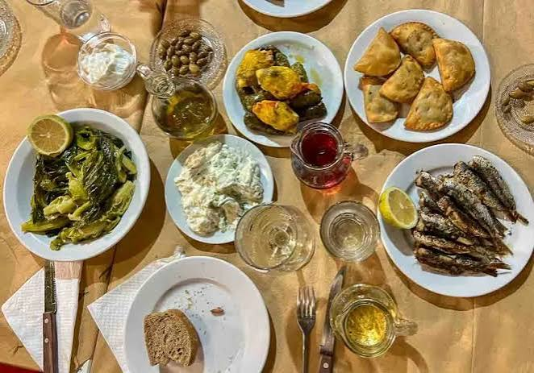
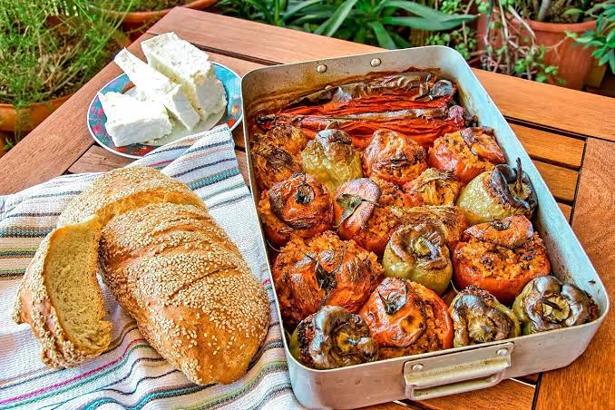
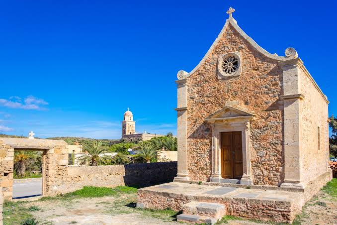
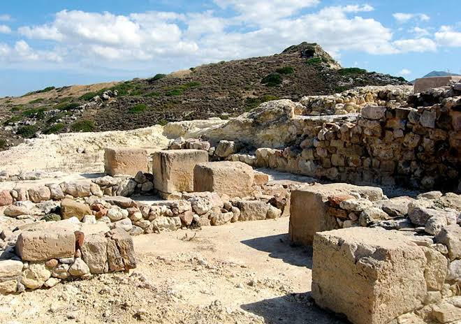
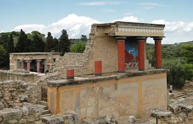
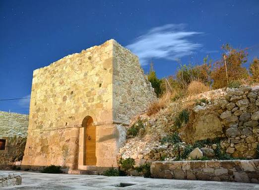

01 · The coast
Beaches
The coastline around Sitia moves effortlessly between long sandy shores, sheltered coves and wild landscapes of pale rock and turquoise water. Vai is known for its naturally growing palm forest and ecologically important wetland, while nearby Itanos combines clear-water beaches with the remains of an ancient settlement. Further south, Kouremenos is loved by windsurfers, Hiona is known for its small seaside tavernas and Xerokambos offers shallow water, quiet bays and a more remote character.
Closer to town, Sitia Beach provides an easy, organised option beside the waterfront. Those wishing to explore further can discover the isolated coast of Papadiokampos or follow the landscape towards Richtis, where a gorge walk eventually reaches one of the area's most secluded shores.
Sea · Sun · Seclusion
Explore Sitia on Tripadvisor




02 · Local flavours
Cretan Cuisine
The cuisine of Sitia grows directly from its dry landscape, olive groves, vineyards and fishing communities. The area's extra virgin olive oil carries the protected designation “Sitia Lasithi Crete” and is produced from Koroneiki olives, while local wines also form part of a tradition cultivated here for centuries. These products shape a cuisine that values freshness, seasonality and restraint rather than unnecessary complexity.
In the town and surrounding villages, meals often begin with vegetables, pulses, wild greens, cheese, olives and bread before moving to seafood or slowly prepared meat. At Hiona, visitors can try kakavia, the traditional fishermen's soup, while family tavernas throughout the region serve recipes closely tied to what the land and sea provide each season.
Olive oil · Fresh produce · Tradition
Explore Sitia on Tripadvisor



03 · Stories through time
History & Archaeology
Sitia's history reaches back to the late Neolithic and Bronze Age. Excavations at Petras, close to the modern town, have revealed a Minoan palace and settlement, while the wider municipality includes major sites such as ancient Itanos, the island settlement of Mochlos and the Minoan palace of Zakros. Together they show the importance of Eastern Crete as a network of settlements, ports and cultural connections across the Aegean.
Above Sitia's harbour stands the Kazarma, the surviving centre of the town's Venetian fortifications and one of its most recognisable landmarks. The Archaeological Museum brings together finds from the region, allowing visitors to connect the objects of everyday ancient life with the landscapes and archaeological sites where they were discovered.
Ancient sites · Venetian heritage · Culture
Explore Sitia on Tripadvisor



